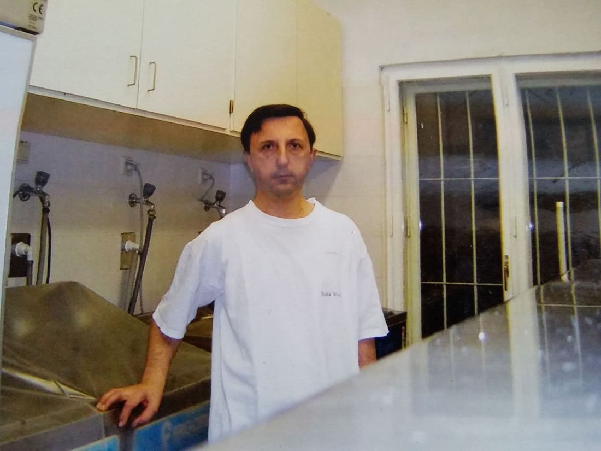
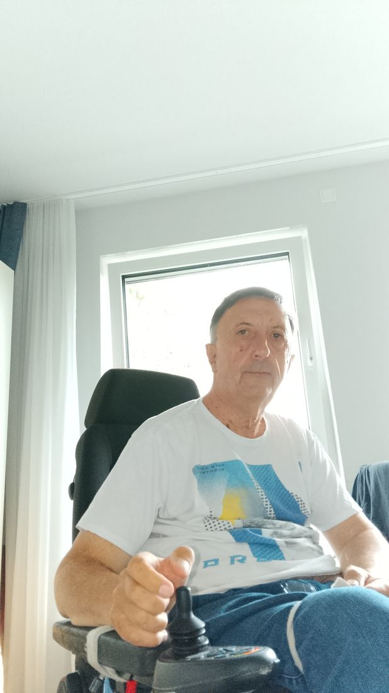
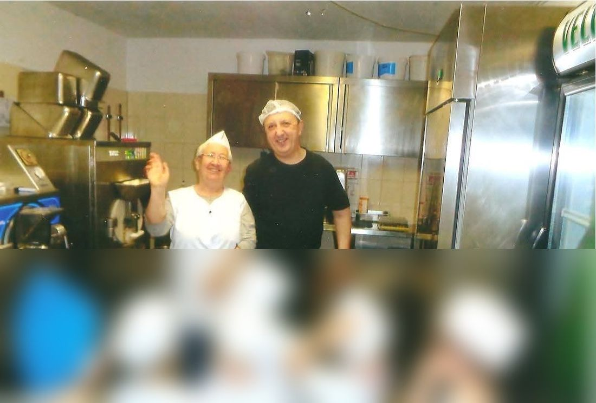
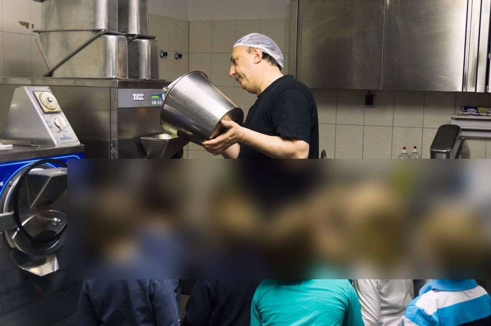
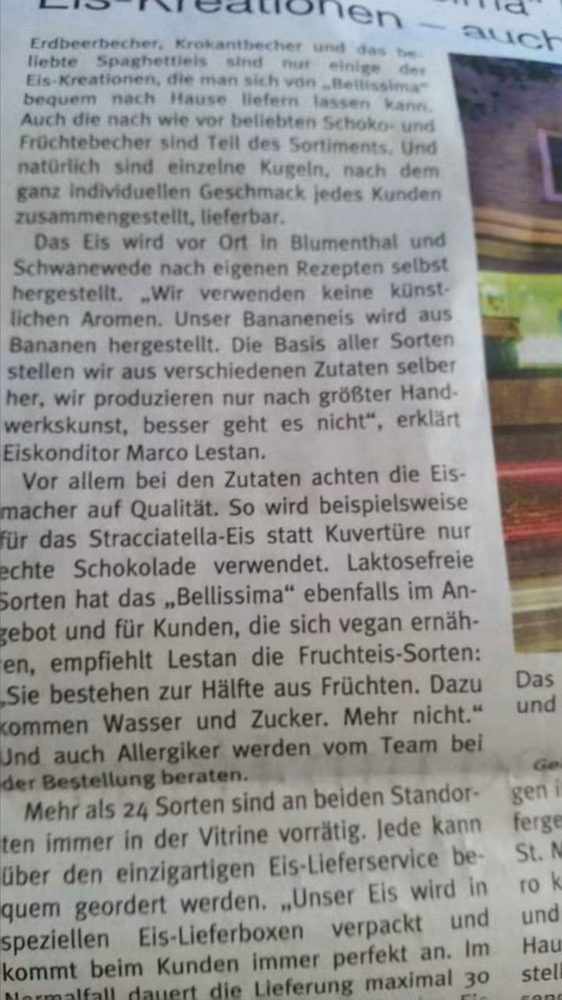

👤 Chi sono
La mia storia
Per anni ho lavorato nella produzione di gelato, tra Austria e Germania, imparando sul campo a conoscere a fondo basi, paste e semilavorati delle principali aziende del settore.
Una malattia che mi ha causato una paralisi alle gambe mi ha allontanato dal lavoro quotidiano in laboratorio, ma non dall'esperienza accumulata in tutti quegli anni. Ho deciso di mettere questa esperienza a disposizione di chi lavora ancora ogni giorno dietro il banco, creando uno strumento gratuito e indipendente per confrontare ingredienti e fare scelte più consapevoli — qualcosa che avrei voluto avere anch'io quando ero in produzione.



Una visita al laboratorio
Negli anni ho anche accolto in laboratorio gruppi di bambini in visita, per far vedere loro da vicino come nasce il gelato. Nelle foto i volti dei bambini sono stati sfocati per tutelarne la privacy.


Perché questo portale
Confronta Prodotti per Gelateria nasce per aiutare gelatieri, pasticceri e gestori di gelaterie artigianali a confrontare in modo rapido e obiettivo basi, paste, semilavorati e ingredienti tecnici delle principali aziende del settore — con dati tecnici (PAC, POD, solidi totali) presentati in modo chiaro, pensati per l'uso quotidiano in laboratorio.
- Indipendenza: nessuna azienda paga per essere inclusa o per essere presentata meglio di un'altra.
- Gratuità: il confronto prodotti, l'archivio e i calcolatori restano sempre gratuiti e senza registrazione.
- Esperienza sul campo: ogni scheda nasce dal punto di vista di chi ha lavorato davvero in produzione, non da un catalogo commerciale.
📰 Rassegna stampa
Alcuni articoli che negli anni hanno raccontato il mio lavoro come gelatiere, tra Vienna e la Germania.


Contatti
Per segnalazioni, correzioni ai dati o proposte di nuovi prodotti da aggiungere all'archivio, scrivimi a marcolestan@gelateriaingredienti.com.